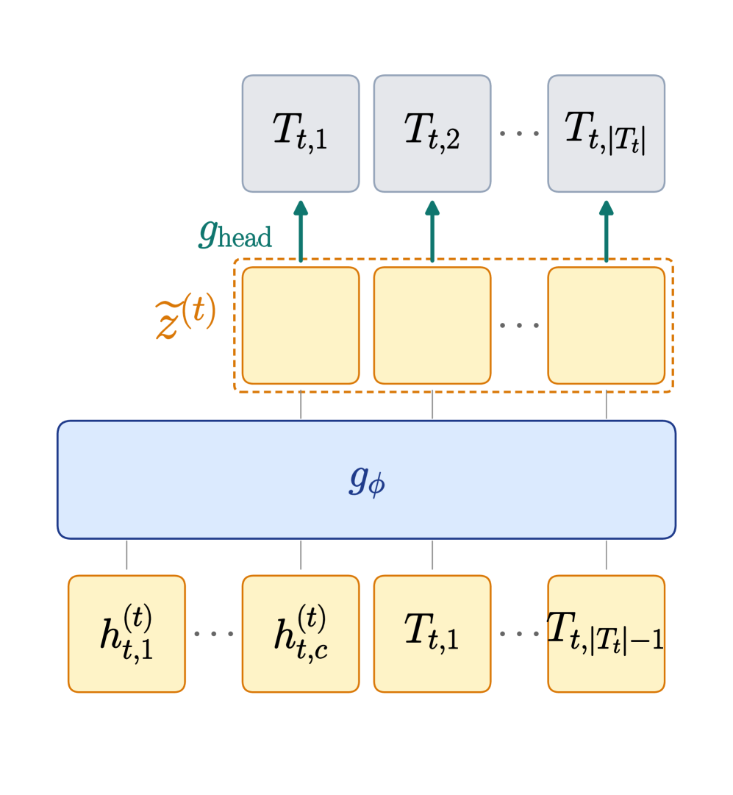

显式思维链（CoT）让LLM在回答前逐步推理，但每个token必须顺序解码，延迟与CoT长度线性相关。隐式推理在隐藏状态中完成中间计算，成本更低，但在超过1B参数后始终追不上显式CoT，且差距随规模扩大。LOTUS用一个简单配方打破了这一僵局：循环填充式Transformer + 对金标准CoT token的并行交叉熵监督。
LOTUS归纳出隐式方法中两个普遍存在的问题。(P1) 顺序生成瓶颈：Coconut、CODI、SIM-CoT等方法以纯自回归方式产生隐式思维，顺序前向次数仍随隐式token数量线性增长：保留了CoT的顺序瓶颈，又放弃了CoT的可读性。(P2) 缺乏CoT锚定：显式CoT给每个推理步骤直接的、位置对齐的token目标，隐式轨迹缺少类似监督就会偏离有意义的运算，大规模训练时不稳定。
一个能同时解决这两个问题的架构，应当用少数几次并行前向来精炼隐状态，而不是每个token走一次自回归步骤。循环（looped）Transformer天然契合第一个要求：跨迭代复用同一套权重来增深计算深度，无需额外参数，近期工作已扩展到十亿参数预训练。
LOTUS在问题和答案之间放置K个可学习的填充式隐式块，每块含c个token，用基础模型前向R次处理该序列。长度为N的显式CoT在R≪N次密集并行计算迭代中处理，而非N次顺序的逐token生成：解决了P1。
为解决P2，LOTUS通过基础模型自身的LM头直接监督隐状态：一个交叉熵损失把每个隐式位置对齐到对应金标准CoT步骤token，全部并行完成。监督目标也可经由一个以所有隐状态为条件的辅助解码器（LOTUS-aux）路由。
L_step和L_ans两个损失在构造上互补：L_step提供覆盖（让每个位置在正确的token上放置概率质量），L_ans提供选择（偏袒能支撑正确答案的联合计算配置）。去掉任一损失都会降低金标准链的似然。
LOTUS一次性计算问题Q的KV缓存，迭代循环R次获得循环后隐状态h^(R)，然后通过基础LM头自回归解码答案。推理完全由并行隐式块承担，唯一的顺序解码发生在短小的答案后缀上：这正是延迟收益的来源。隐式推理步骤在答案生成过程中从不被读出，答案始终由隐式隐藏状态生成。
LOTUS从GPT-2到Llama-3.2-3B-Instruct都良好扩展。先前的隐式方法在小规模上与显式CoT持平，但随骨干增大而落后。LOTUS则在每个规模上都把域内差距保持在约1.5分以内，且差距不随规模扩大。在3B上，LOTUS在域外平均上超越显式CoT，GSM8K域内差距缩到约1分（LOTUS + CODI）。

LOTUS-aux（辅助解码器路由）在3B上与LOTUS持平，但在更小规模上退化，而直接LM头监督的LOTUS在跨规模上保持稳健。
CoT自回归解码其推理链，而LOTUS把相同的思考压缩进R次并行隐式迭代。思维阶段比CoT快2.5倍、比SIM-CoT快1.2倍。 在3B自然语言CoT压力测试中，LOTUS准确率与显式CoT持平（68.13% vs 68.41%），同时把思维阶段延迟从963.6ms降到140.8ms：6.9倍加速。

无隐式监督时，仅循环骨干（63.3%）就已超越CODI + SIM-CoT（62.3%）。每个有监督的变体都超过无监督基线，确认金标准CoT监督贡献增益。LOTUS（循环后直接，70.0%）与最佳LOTUS-aux（逐迭代，69.9%）持平。
每块token预算c：准确率从c=1（49.7%）急剧上升到c=5（67.5%），c=25时饱和（70.0%）。推理时可自由改变c：从6到300位置，思维延迟仅变化约30ms，因所有位置并行处理。循环深度R：准确率随R急剧上升（R=2时14.6% 到R=6时70.0%），推理时运行少于训练迭代数明显有害，多于训练次数无进一步收益。
通过基础LM头读取LOTUS循环后的隐状态h^(R)，给金标准CoT分配了3.07的低NLL和70.9% 的top-1准确率：隐状态携带了足够信息来重建金标准CoT链。
更令人惊讶的是，隐状态对未见但有效的推理链也分配了分级概率。在所有四种读出中，顺序G≪U≪Random成立（仅真实< 未见但有效 < 随机控制）。未见有效的中间结果确实在 top-k 中浮现（LOTUS 基础 LM 头读出，15.3% top-1，64.0% top-5），尽管从未被训练过。

参考：https://arxiv.org/abs/2606.31779